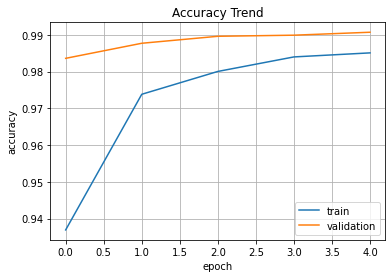

pytorch_keras
import numpy as np
import pandas as pd
import matplotlib.pyplot as plt
from sklearn.metrics import accuracy_score
from sklearn import preprocessing
from sklearn.model_selection import train_test_split
from glob import glob
from tqdm import tqdm
import cv2
from google.colab.patches import cv2_imshow
import torchvision
import torchvision.transforms as transforms
from torchvision import datasets
import torch
import torch.nn as nn
from torch import optim
from torch.nn import functional as F
from torch.utils.data import Dataset, DataLoader
import warnings
warnings.simplefilter(action='ignore')
pytorch 신경망 모델
if torch.cuda.is_available():
device = 'cuda'
else :
device ='cpu'
transform = transforms.Compose([
transforms.ToTensor(),
transforms.Resize((128, 128)),
transforms.Normalize(mean = [ 0.485, 0.456, 0.406 ],
std = [ 0.229, 0.224, 0.225 ])
])
train_ds = datasets.STL10('/', split='train', download=True, transform=transform)
val_ds = datasets.STL10('/', split='test', download=True, transform=transform)
Files already downloaded and verified
Files already downloaded and verified
batch_size = 8
train_loader = DataLoader(train_ds, batch_size=batch_size, shuffle=False)
valid_loader = DataLoader(val_ds, batch_size=batch_size, shuffle=False)
for i, batch in enumerate(train_loader):
print(batch[0].shape)
print(batch[1].shape)
break
torch.Size([8, 3, 128, 128])
torch.Size([8])
Model
#https://velog.io/@yookyungkho/%EB%94%A5%EB%9F%AC%EB%8B%9D%EC%9D%98-%EA%B3%A0%EC%A7%88%EB%B3%91-Overfitting%EA%B3%BC%EC%A0%81%ED%95%A9-%ED%95%B4%EA%B2%B0-%ED%8C%81
class ClassificationModel(nn.Module):
def __init__(self):
super(ClassificationModel, self).__init__()
self.conv1 = nn.Sequential(
nn.Conv2d(3, 64, kernel_size=(7, 7), stride=(2, 2), padding=(0, 0)),
nn.BatchNorm2d(64, eps=0.001, momentum=0.1, affine=True, track_running_stats=True),
nn.ReLU(inplace=True),
nn.AvgPool2d(kernel_size=(3, 3), stride=(2, 2), padding=1),
)
self.conv2 = nn.Sequential(
nn.Conv2d(64, 128, kernel_size=(7, 7), stride=(2, 2), padding=(0, 0)),
nn.BatchNorm2d(128, eps=0.001, momentum=0.1, affine=True, track_running_stats=True),
nn.ReLU(inplace=True),
nn.AvgPool2d(kernel_size=(3, 3), stride=(2, 2), padding=1),
)
self.classifier = nn.Sequential(
nn.Flatten(1),
nn.Linear(6272,10),
nn.Softmax()
)
def forward(self, img):
x = self.conv1(img)
print('cnn_1', x.shape)
x = self.conv2(x)
print('cnn_2', x.shape)
output = self.classifier(x)
return output
Train
pytorch_model = ClassificationModel().to(device)
criterion = nn.CrossEntropyLoss()
optimizer = optim.SGD(pytorch_model.parameters(), lr = 0.001, momentum = 0.9)
train_loss = []
for iter,batch in tqdm(enumerate(train_loader)):
optimizer.zero_grad()
x = torch.tensor(batch[0], dtype=torch.float32, device=device)
y = torch.tensor(batch[1], dtype=torch.long, device=device)
pred = pytorch_model(x)
loss = criterion(pred, y)
loss.backward()
optimizer.step()
train_loss.append(np.sqrt(loss.item()))
print('\n', np.mean(train_loss))
625it [01:06, 9.38it/s]
1.4713646708806434
print(pytorch_model._modules)
OrderedDict([('conv1', Sequential(
(0): Conv2d(3, 64, kernel_size=(7, 7), stride=(2, 2))
(1): BatchNorm2d(64, eps=0.001, momentum=0.1, affine=True, track_running_stats=True)
(2): ReLU(inplace=True)
(3): AvgPool2d(kernel_size=(3, 3), stride=(2, 2), padding=1)
)), ('conv2', Sequential(
(0): Conv2d(64, 128, kernel_size=(7, 7), stride=(2, 2))
(1): BatchNorm2d(128, eps=0.001, momentum=0.1, affine=True, track_running_stats=True)
(2): ReLU(inplace=True)
(3): AvgPool2d(kernel_size=(3, 3), stride=(2, 2), padding=1)
)), ('classifier', Sequential(
(0): Flatten(start_dim=1, end_dim=-1)
(1): Linear(in_features=6272, out_features=10, bias=True)
(2): Softmax(dim=None)
))])
Tensorflow CNN
import tensorflow as tf
from tensorflow.keras.datasets import mnist
from tensorflow.keras.models import Sequential
from tensorflow.keras.layers import Conv2D, MaxPool2D
from tensorflow.keras.layers import Flatten, Dense, Dropout
(x_train, y_train), (x_test, y_test) = mnist.load_data()
x_train = x_train.reshape(-1, 28, 28, 1)
x_test = x_test.reshape(-1, 28, 28, 1)
print(x_train.shape, x_test.shape)
print(y_train.shape, y_test.shape)
(60000, 28, 28, 1) (10000, 28, 28, 1)
(60000,) (10000,)
x_train = x_train.astype(np.float32)/255.0
x_test = x_test.astype(np.float32) /255.0
Model
cnn = Sequential()
cnn.add(Conv2D(input_shape = (28, 28, 1), kernel_size = (3, 3),
filters = 32, activation = 'relu'))
cnn.add(Conv2D(kernel_size = (3, 3), filters = 64, activation = 'relu'))
cnn.add(MaxPool2D(pool_size =(2,2)))
cnn.add(Dropout(0.25))
cnn.add(Flatten())
cnn.add(Dense(128, activation = 'relu'))
cnn.add(Dropout(0.5))
cnn.add(Dense(10, activation = 'softmax'))
cnn.compile(loss = 'sparse_categorical_crossentropy', optimizer = tf.keras.optimizers.Adam(), metrics = ['accuracy'])
hist = cnn.fit(x_train, y_train, batch_size = 128, epochs = 5, validation_data = (x_test, y_test))
Epoch 1/5
469/469 [==============================] - 125s 265ms/step - loss: 0.2101 - accuracy: 0.9369 - val_loss: 0.0510 - val_accuracy: 0.9836
Epoch 2/5
469/469 [==============================] - 102s 216ms/step - loss: 0.0889 - accuracy: 0.9738 - val_loss: 0.0373 - val_accuracy: 0.9877
Epoch 3/5
469/469 [==============================] - 97s 207ms/step - loss: 0.0672 - accuracy: 0.9800 - val_loss: 0.0330 - val_accuracy: 0.9896
Epoch 4/5
469/469 [==============================] - 98s 209ms/step - loss: 0.0525 - accuracy: 0.9840 - val_loss: 0.0294 - val_accuracy: 0.9899
Epoch 5/5
469/469 [==============================] - 97s 207ms/step - loss: 0.0476 - accuracy: 0.9851 - val_loss: 0.0274 - val_accuracy: 0.9907
cnn.summary()
Model: "sequential_1"
_________________________________________________________________
Layer (type) Output Shape Param #
=================================================================
conv2d (Conv2D) (None, 26, 26, 32) 320
conv2d_1 (Conv2D) (None, 24, 24, 64) 18496
max_pooling2d (MaxPooling2D (None, 12, 12, 64) 0
)
dropout (Dropout) (None, 12, 12, 64) 0
flatten (Flatten) (None, 9216) 0
dense (Dense) (None, 128) 1179776
dropout_1 (Dropout) (None, 128) 0
dense_1 (Dense) (None, 10) 1290
=================================================================
Total params: 1,199,882
Trainable params: 1,199,882
Non-trainable params: 0
_________________________________________________________________
plt.plot(hist.history['accuracy'])
plt.plot(hist.history['val_accuracy'])
plt.title('Accuracy Trend')
plt.ylabel('accuracy')
plt.xlabel('epoch')
plt.legend(['train', 'validation'], loc = 'best')
plt.grid()
plt.show()
